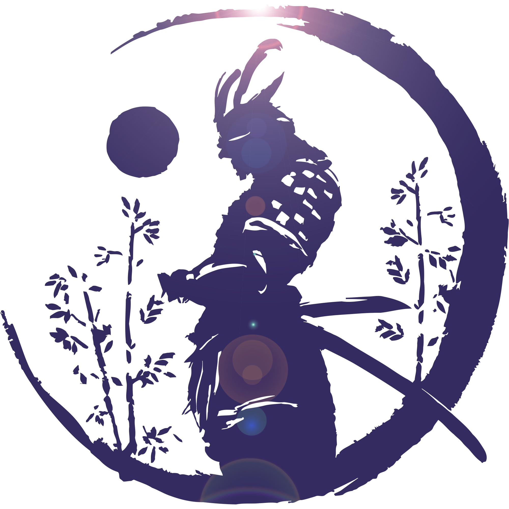

O CÍRCULO DE GIZ

No País do Ferro, a lei é absoluta, mas a honra é soberana. Se um Samurai sente que sua honra foi manchada ou deseja o lugar de um superior, ele pode invocar o Círculo de Giz.
1. O CHAMADO DO DESAFIO
O ritual começa quando o desafiante desenha um círculo com giz branco no chão (seja na neve, na pedra ou na madeira do Dōjō) e pronuncia o nome do desafiado em voz alta perante testemunhas.
- Alcance Total Qualquer Samurai pode desafiar qualquer pessoa de qualquer patente. Um Soldado pode desafiar um General, ou até o próprio Mifune.
- O Juiz do Aço Para ser oficial, um superior neutro ou um membro da Staff (como espírito do código) deve estar presente para garantir que ninguém interferirá na luta.
2. LUTA ATÉ A MORTE
Dentro do círculo, as leis comuns do país são suspensas e as lâminas falam mais alto que a diplomacia.
- Legalidade Matar dentro do Círculo de Giz não é crime. O vencedor sai livre de qualquer punição do Código de Aço. Matar o mesmo adversário fora do círculo é considerado assassinato desonroso e leva à execução.
- Sem Rendição Uma vez que ambos entram no círculo, só um sai vivo. É o fim da ficha (Morte em ON) do perdedor.
3. O PESO DA RECUSA (O ESTIGMA)
Ninguém é obrigado a aceitar o duelo, mas o preço da vida covarde é a desonra eterna. Se o desafiado recusar o Círculo de Giz, ele é automaticamente rotulado como Fracassado.
- Queda de Honra O Samurai perde todos os seus pontos de Renome/Score acumulados.
- Rebaixamento Ele é rebaixado de patente imediatamente (ex: um General vira Soldado comum no mesmo instante).
- Insubordinação Legal Nenhum outro Samurai é obrigado a seguir suas ordens, pois ele provou não ter o espírito e a coragem de um guerreiro.
- A Marca Ele recebe a tag de Covarde na ficha, o que impede qualquer promoção por 1 mês real.
4. CONSEQUÊNCIAS DA VITÓRIA
Vencer o Círculo não é apenas sobre sobrevivência, mas sobre ascensão.
- Espólio de Guerra O vencedor tem o direito de ficar com a Lâmina Eterna do perdedor como troféu e lembrete de sua superioridade.
- Antiguidade e Respeito Se o vencedor for de patente inferior, ele ganha um bônus massivo de Score. Embora não tome a patente do morto automaticamente (para evitar caos militar), ele se torna o primeiro da fila para a próxima vaga de promoção disponível.
- Sucessão por Sangue Se um General mata outro dentro do círculo, ele assume o controle total das tropas do falecido.
5. REGRA DE EQUILÍBRIO (COOLDOWN)
Para evitar que o servidor se torne uma carnificina caótica e sem sentido de "Battle Royale", existem limites rigorosos.
- Cooldown de Uso Um Samurai só pode invocar o Círculo de Giz uma vez a cada 15 dias.
- Intervenção da Staff Desafios por motivos fúteis (meta-gaming ou toxicidade em off disfarçada) podem ser anulados pelos administradores se não houver um motivo sólido de RP por trás da disputa de honra.